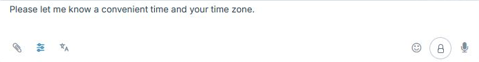
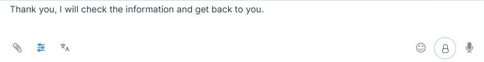

Сохранить черновик при выборе шаблона
В админском Chat V2 выбор нового шаблона может стереть уже набранный ответ. Если поле занято, оператор должен сам решить, что сделать с новым текстом.
Открыть интерактивный макет редактора · Открыть карточку Trello
Как есть сейчас
Откройте тестовую беседу в Chat V2. Нажмите «Шаблоны и метки» и выберите «Уточнить время». На снимке виден первый черновик.

Снова откройте список и выберите «Проверка данных». Первый текст сразу исчезает. В поле остаётся только второй шаблон.

Как должно быть
Повторите эти шаги в интерактивном макете того же редактора. Текст в поле сохраняется до выбора действия. Посмотреть окно выбора в макете.

- Заменить. Оставить в поле только новый шаблон.
- Добавить в конец. Сохранить исходный текст и добавить шаблон с новой строки. Если перенос уже есть, использовать его.
- Отмена. Оставить исходный текст. Escape и крестик дают тот же результат.
В пустое поле шаблон вставляется сразу. Пробелы и переводы строки считаются вводом. Шаблон остаётся редактируемым черновиком и отправляется только отдельной командой оператора.
Как принять на тестовой сборке
Повторите действия по одному с одинаковым черновиком. Сверьте поле до выбора и после каждого результата. Проверьте пустое поле, уже имеющийся перенос строки и отсутствие нового сообщения в истории. Отдельно проверьте, что при ошибке подготовки сохраняется черновик, а ответ от старой беседы не попадает в новую. Существующее копирование шаблона сохраняется. Полное согласованное ТЗ №70.